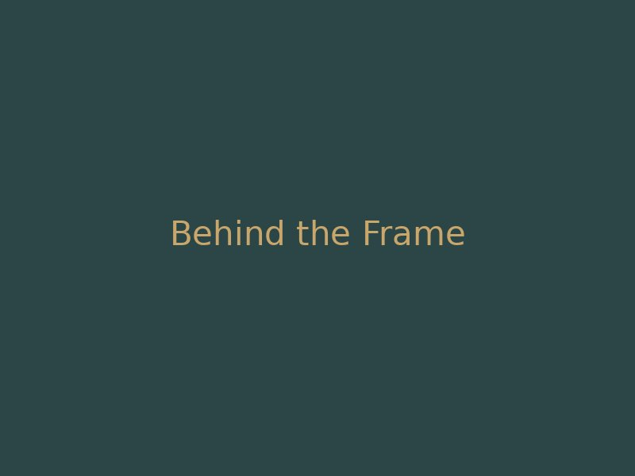

Editorial & Features
Articles & Lore Breakdowns
Deep-dive essays, behind-the-scenes set reports, interviews, and historical retrospectives covering all 7 universes.

Deep-dive essays, behind-the-scenes set reports, interviews, and historical retrospectives covering all 7 universes.
